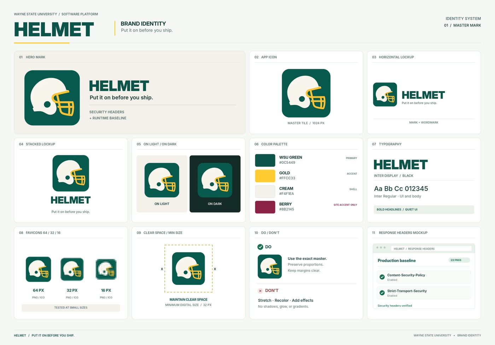

Run on a git.wayne.edu instance runner#
This page explains where this repo's CI runs today and why every product in the stack asks for a git.wayne.edu instance runner. Until the runner lands, keep your pipeline on the test GitLab instance.
The goal#
git.wayne.edu has no runners today, so CI for this repo runs on the test GitLab instance. Every product in the stack strongly recommends a git.wayne.edu instance runner.

GIF via Tenor
Why it matters#
HELMET, the band, built their sound on precision: short songs, no filler, every part earning its place. That is the whole point of a baseline runtime. The floor is tight, the headers are exact, and nothing here is decoration.
Call helmet_boot() once and the rest is Exactly What You Wanted. Size Matters too, which is why the core stays small enough to read in an afternoon.
The brand board#
The brand board: the mark, lockups, palette and type

Same team, every snap#
WayneUI and the stack. HELMET plays the line.
- WayneUI
- CREED
- PROCTOR
- SESAME
- HELMET
- Sourdough
- Squire
- Preflight
- Pinstripe
- Booster
- Rollcall
- Drawbridge
- ADVISOR
- WELD
Images are regenerated from the front page by scripts/readme-art. Chalk dust included.